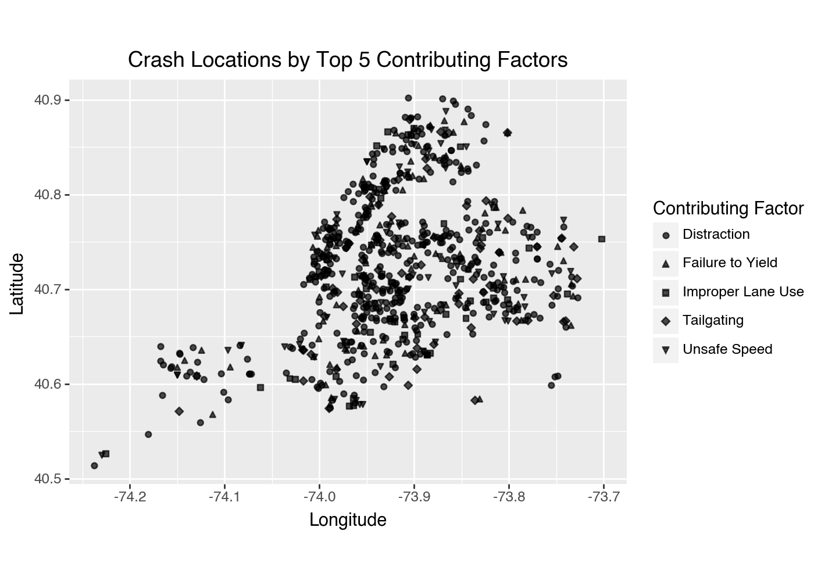
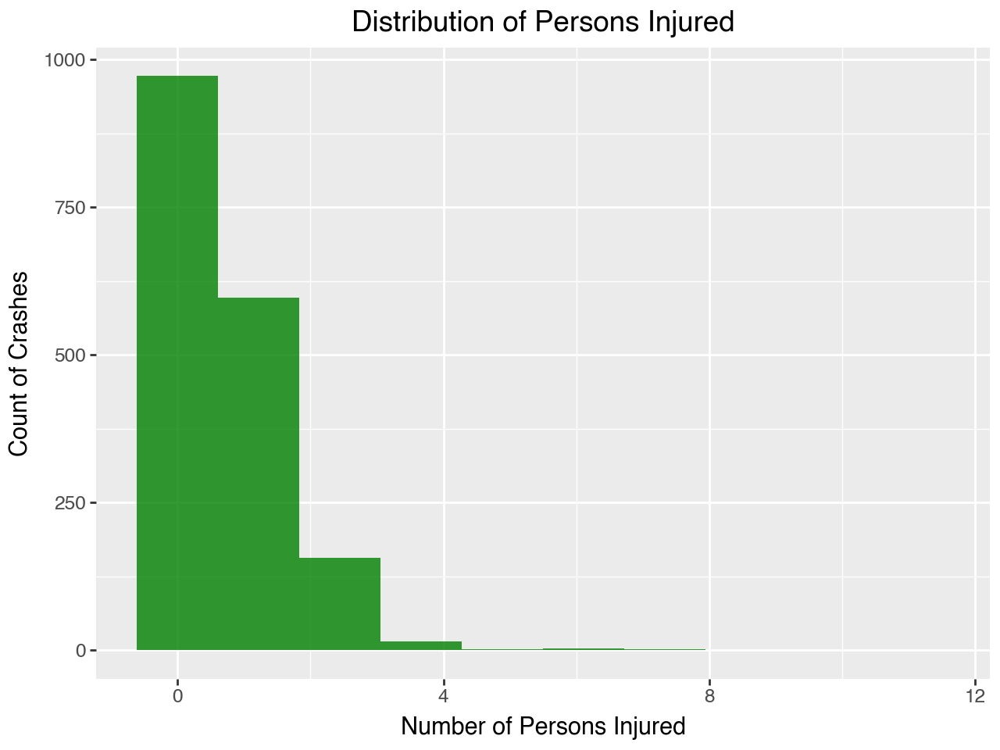

from plotnine import *7 Visualization
7.1 Data Visualization with Plotnine
This section was written by Julia Mazzola
7.1.1 Introduction
Hi! My name is Julia, and I am a Senior double majoring in Economics and Statistical Data Science. I’m excited to show you the power of data visualization with Plotnine, a Python library inspired by R’s ggplot2. Visualization is a crucial tool to effectively communicate your findings to your audience and Plotnine is a useful library to use.
7.1.2 What is Plotnine?
Plotnine uses grammer of graphics to create layered, customizable visualizations. Grammar of graphics is a framework that provides a systematic approach to creating visual representations of data by breaking down the plot into its fundamental components. To understand this better, think about how sentences have grammer, we can layer our graphics to create complex and detailed visulizations.
Components of the layered grammar of graphics:
- Layer: used to create the objects on a plot
- Data: defines the source of the information to be visualized
- Mapping: defines how the variables are represented in the plot
- Statistical transformation (stat): transforms the data, generally by summarizing the information
- Geometric object (geom): determines the type of plot type (e.g., points, lines, bars)
- Position adjustment (position): adjusts the display of overlapping points to improve clarity
- Scale: controls how values are mapped to aesthetic attributes (e.g., color, size)
- Coordinate system (coord): maps the position of objects onto the plane of the plot, and controls how the axes and grid lines are drawn
- Faceting (facet): used to split the data up into subsets of the entire dataset
You can make a wide array of different graphics with Plotnine. Some common examples are:
- Scatterplot,
geom_point() - Bar Chart
geom_bar() - Histogram
geom_histogram() - Line Chart
geom_line()
7.1.3 Installing Plotnine
To use Plotnine you must install it into your venv first. The instructions are as follows:
Type this command into either conda, your terminal, gitbash, or whatever you use for package install for your venv.
For pip:
pip install plotnine
For conda:
conda install -c conda-forge plotnine
You can import Plotnine without a prefix:
Or with with a prefix to access each component such as:
import plotnine as p9This way is generally recommended for larger projects or when collaborating with others for better code maintainability. But for simplicity in this section I will use the first method.
For the examples we will be using NYC open data to visualize motor vehicle crashes from the week of June 30, 2024.
import pandas as pd
nyc_crash = pd.read_feather('nyccrashes_cleaned.feather').dropna(subset=['borough'])7.1.4 Scatterplot
Firstly, we will be creating a scatterplot. This can be done with geom_point(). Our scatterplot will be displaying Crash Locations based on the longitude and latitude of the crash sites.
Creating a Basic Scatterplot
import warnings
warnings.filterwarnings("ignore", category=UserWarning)
(ggplot(nyc_crash, aes(x='longitude', y='latitude')) +
#specifies graph type
geom_point() +
#creates labels for graphic
labs(title='Crash Locations',
x='Longitude',
y='Latitude'))
Customizing a Scatterplot
You can customize your plot further by changing the color, edge color, transparency, size, or shape of your points. This is done in geom_point().
(ggplot(nyc_crash, aes(x='longitude', y='latitude')) +
geom_point(color = 'black', fill = 'purple',
alpha = 0.5, size = 2, shape = 's') +
labs(title='Crash Locations by Contributing Factor',
x='Longitude',
y='Latitude'))
This scatterplot provides a lot of information, yet there are ways we can customize our plot to be more informative for our audience. We can create a scatterplot that differentiates by contributing factor.
Changing Shape of Variables
Adding shapes by the contributing factor for vehicle 1:
#List of top 5 reasons for the contributing facor since it is difficult to display each reason
factor1 = ["Driver Inattention/Distraction",
"Failure to Yield Right-of-Way",
"Following Too Closely",
"Unsafe Speed",
"Passing or Lane Usage Improper"]
# Filter the data to only include valid contributing factors
confact = nyc_crash[nyc_crash['contributing_factor_vehicle_1'].isin(factor1)]#changes shape of point according to 'contributing_factor_vehicle_1'
(ggplot(confact, aes(x='longitude', y='latitude',
shape ='contributing_factor_vehicle_1')) +
geom_point() +
labs(title='Crash Locations by Top 5 Contributing Factor',
x='Longitude',
y='Latitude'))
Changing Color of Variables
To add color coordination to your plot in Plotnine, you can specify the variable you want to use for coloring by including color='variable' within the aes() function. This allows you to visually distinguish different categories in your dataset.
#color= changhes color according to 'borough'
(ggplot(nyc_crash, aes(x='longitude', y='latitude', color = 'borough')) +
geom_point() +
labs(title='Crash Locations',
x='Longitude',
y='Latitude'))
As you can see each borough has its own color and the audience can easily see which borough the crash occured in.
#color= changes color according to 'contributing_factor_vehicle_1'
(ggplot(confact, aes(x='longitude', y='latitude',
color ='contributing_factor_vehicle_1')) +
geom_point() +
labs(title='Crash Locations by Top 5 Contributing Factor',
x='Longitude',
y='Latitude'))
This graph uses color to distinguish what contributing factor caused the crash.
Scatterplots per Facet
To organize your data in a way that enhances interpretability, you can utilize facet_grid() or facet_wrap(). This approach allows for the creation of separate plots based on categorical variables, making it easier to identify trends and patterns.
Scatterplot of Crash Locations by Contributing Factor with facet_wrap():
(ggplot(confact, aes(x='longitude', y='latitude')) +
geom_point() +
#create separate plots for each contributing factor
facet_wrap('contributing_factor_vehicle_1') +
labs(title='Crash Locations by Top 5 Contributing Factor',
x='Longitude',
y='Latitude') +
#changes the size of the graphic
theme(figure_size=(6, 8)))
Scatterplot of Crash Locations by Contributing Factor with facet_grid():
(ggplot(confact, aes(x='longitude', y='latitude')) +
geom_point() +
#create separate plots for each contributing factor
facet_grid('contributing_factor_vehicle_1') +
labs(title='Crash Locations by Top 5 Contributing Factor',
x='Longitude',
y='Latitude') +
#changes the size of the graphic
theme(figure_size=(6, 10)))
Scatterplot of Crash Locations by Contributing Factor and Borough:
(ggplot(confact, aes(x='longitude', y='latitude')) +
geom_point() +
#create a grid of subplots based on the values of two categorical variables
facet_grid('contributing_factor_vehicle_1 ~ borough') +
labs(title='Crash Locations by Top 5 Contributing Factor',
x='Longitude',
y='Latitude') +
#changes angle of text and size of the graphic
theme(
axis_text_x=element_text(angle=90),
figure_size=(7, 12)))
Adding linear regression line to scatterplot
Fitting a regression line to your plot can be really helpful to visualize trends to your data easier. To add a linear regression line to your scatterplot, you would include the following line of code:
geom_smooth(method='lm', se=False, color=' ')<plotnine.geoms.geom_smooth.geom_smooth at 0x118bd8320>Although this data is not one that makes sense to fit a regression line, the scatterplot with it is as follows:
(ggplot(nyc_crash, aes(x='longitude', y='latitude')) +
geom_point() +
#adds a linear regression line
geom_smooth(method='lm', se=False, color='red') +
labs(title='Crash Locations',
x='Longitude',
y='Latitude'))
7.1.5 Bar Chart
Another common use for displaying data is a bar chart. You can create one with geom_bar(). We will start with a simple chart of crashes by borough.
Creating a Basic Bar Chart
(ggplot(nyc_crash, aes(x='borough')) # Use 'borough' for the x-axis
+ geom_bar(fill='purple')
+ labs(title='Number of Crashes by Borough',
x='Borough',
y='Count'))
Customizing your Bar Chart
You can change up your bar chart a couple of different ways. You can handpick colors you want, designate it to variables, and flip orientation, etc:
#designate your preffered colors (pastel color codes)
colors = ['#B3FFBA', '#E1C6FF', '#FFB3BA', '#BAE1FF', '#FFD5BA']
#adding fill= changes the color of bar according to variable
(ggplot(nyc_crash, aes(x='borough', fill = 'borough'))
#assigns your preffered colors
+ geom_bar(fill = colors)
#flips orientation of the chart
+ coord_flip()
+ labs(title='Number of Crashes by Borough',
x='Borough',
y='Count'))Multivariable Bar Chart
You can also split up a bar chart to make it visually easier to understand.
#using 'confact' dataset again for better visualization
(ggplot(confact, aes(x='contributing_factor_vehicle_1', fill='borough'))
+ geom_bar()
+ ggtitle('Top 5 Contributing Factors by Borough')
+ xlab("Top 5 Contributing Factor Vehicle 1")
+ ylab("Number of Crashes")
#creates smaller text
#rotates x-axis text for readability
#creates a bigger image
+ theme(axis_text_x=element_text(size=9, angle=65), figure_size= (7,7)))
7.1.6 Histogram
Another useful way to display data is a histogram. You can create one with geom_hisogram(). Using a histogram is very useful when displaying continuous data.
Basic Histogram
(ggplot(nyc_crash, aes(x='number_of_persons_injured')) +
#bins= sets the amount of bars in your histogram
geom_histogram(bins=10, alpha=0.8, fill='green') +
labs(title='Distribution of Persons Injured',
x='Number of Persons Injured',
y='Count of Crashes'))
With a histogram it is very easy to understand trends for a dataset and you can see that our NYC crash data is positively skewed.
Multivariable Histogram
Similar to bar charts, we can make Histograms that display more than one variable. We can also add some more customizations such as adding an outline color for our sections, adding width of the bins and angle of .
(ggplot(confact, aes(x='number_of_persons_injured', fill = 'borough'))
#changing width of the bins and adding outline color with color= to make it easier to read
+ geom_histogram(binwidth=1, color = 'black'))Overlapping Histogram
Histograms can also be useful when comparing multiple categories. Here we are comparing Manhattan and Brooklyn’s number of persons injured with an overlapping histogram.
(ggplot(nyc_crash[nyc_crash['borough'].isin(['MANHATTAN', 'BROOKLYN'])], aes(x='number_of_persons_injured', fill='borough')) +
geom_histogram(bins=10) +
labs(title='Persons Injured: Manhattan vs Brooklyn',
x='Number of Persons Injured',
y='Count'))
7.1.7 Line Chart
Line charts are great for time-series data and can be created with geom_line(). This type of chart is particularly useful for identifying patterns, fluctuations, and trends, making it easier to understand how a variable changes over a specified period. We will create one analyzing Number of Crashes by Hour.
Basic Line Chart
nyc_crash['crash_datetime'] = pd.to_datetime(nyc_crash['crash_datetime'])
# Extract hour
nyc_crash['crash_hour'] = nyc_crash['crash_datetime'].dt.hour
# Count crashes per hour
crash_counts = nyc_crash.groupby(['crash_hour']).size().reset_index(name='crash_count')#plot crashes by hour
(ggplot(crash_counts, aes(x='crash_hour', y='crash_count')) +
#creates the line chart
geom_line() +
#adds points for better visibility
geom_point() +
labs(title='Number of Crashes by Hour',
x='Hour',
y='Crashes') +
#formats the x-axis to display ticks by every 2 hours
scale_x_continuous(breaks=range(0, 24, 2)))
This example is excellent for understanding the grammar of graphics. As you can see, we use geom_line() to create the line chart, while also adding geom_point(), which is typically used for scatterplots, to make the figure clearer by layering additional details.”
Multivariable Line Chart
Similarly to the other figures you can create a line chart with multiple variables. Now we will create a chart with number of crashes by borough.
#setting crash counts to also include borough
crash_counts = nyc_crash.groupby(['crash_hour', 'borough']).size().reset_index(name='crash_count')
#plots crashes by hour with different lines for each borough
(ggplot(crash_counts, aes(x='crash_hour', y='crash_count', color='borough')) +
#size= changes the thinkness of the lines
geom_line(size=1) +
labs(title='Number of Crashes by Hour and Borough',
x='Hour of the Day',
y='Number of Crashes') +
scale_x_continuous(breaks=range(0, 24, 2)))
Line Chart per Facet
You can use plot each variable by on separate panels with facet_wrap().
(ggplot(crash_counts, aes(x='crash_hour', y='crash_count')) +
geom_line(size=1) +
#breaks the figure up by borough
facet_wrap("borough") +
labs(title='Number of Crashes by Hour and Borough',
x='Hour of the Day',
y='Number of Crashes'))7.1.8 Conclusion
Plotnine is a very powerful tool to make impactful and detailed graphics. The flexibility of its grammar of graphics approach means there are endless ways to modify, enhance, and be creative with your plots. You can layer geoms, adjust aesthetics, and apply scales, facets, and themes.
Basic things to remember:
Creating Specific Plots
- Scatterplot,
geom_point() - Boxplot
geom_box() - Histogram
geom_histogram() - Line Chart
geom_line() - Bar Chart
geom_bar() - Density Plot
geom_denisty()
Formatting and Customizing Your Figure
fill: to change the color of the datacolor: to change the color of the bordersalpha: to change the transparencybins: to change the number of binsfigure_size: to change size of graphicgeom_smooth: to add a smoothed linefacet: plot each group on a separate panelfacet_wrap(): creates a series of plots arranged in a grid, wrapping into new rows or columns as neededfacet_grid(): allows you to create a grid layout based on two categorical variables, organizing plots in a matrix format
theme: change overall theme
There are many other features and customizations you can do with Plotnine. For more information on how to leverage the full potential of this package for your data visualization needs check out Plotnine’s Graph Gallery.
Happy plotting!
7.1.9 Sources
Sarker, D. (2018). A comprehensive guide to the grammar of graphics for effective visualization of multi-dimensional data. Towards Data Science. https://towardsdatascience.com/a-comprehensive-guide-to-the-grammar-of-graphics-for-effective-visualization-of-multi-dimensional-1f92b4ed4149
Python Graph Gallery. (2024). Plotnine: ggplot in python. Python Graph Gallery. https://python-graph-gallery.com/plotnine/